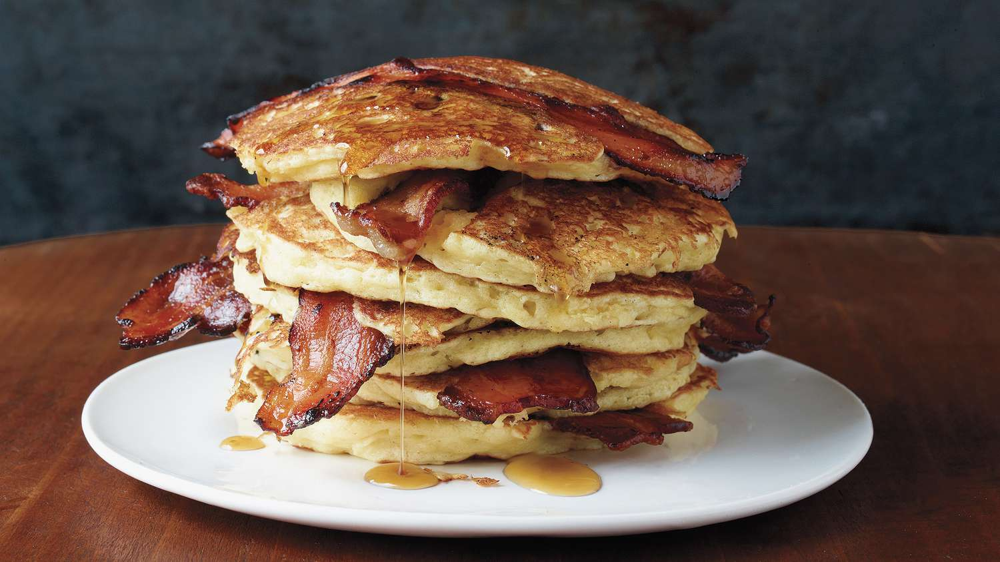

Bacon Pancakes

Description
These bacon pancakes are the sweet-salty combo that will
start your day out right. It's a breakfast all in one,
with plenty of bacon in every bite.
Let's get cooking!
Ingredients
- 6 slices bacon
- 1 cup pancake mix
- 1/2 cup milk
- 1 tbsp vegetable or avocado oil
- 1 large egg
- 1 tsp ground cinnamon
- Maple syrup, for serving
Steps
-
Place bacon in a large cast iron skillet
or nonstick skillet and cook over medium-high heat,
turning occasionally, until evenly browned, about
10 minutes. Drain bacon slices on paper towels.
-
Whisk together baking mix, milk, oil, egg, and
cinnamon in a bowl until smooth. Crumble 2 bacon
slices into the batter, then mix the batter again.
-
Heat a medium-sized non-stick skillet to medium-low
heat. Cut 1 one of the remaining bacon slices in half,
then layu the halves in the pre-heated skillet.
Pour just enough batter over 1 half slice to cover it.
Repeat with the other half slice of bacon.
-
Cook until pancakes have puffed up and bubbles have
appeared. Flip and cook the other side until golden
brown. Remove pancakes from the pan and repeat
with reamining bacon and batter.
-
Serve with maple syrup on top and any leftover bacon.
Home